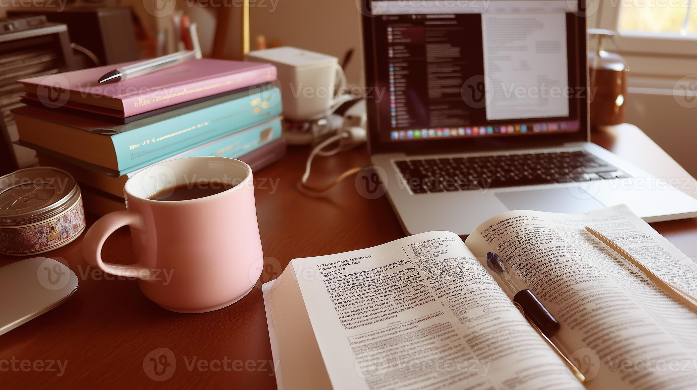

Resources
Home
Time Management
Study Methods
Avoiding Distraction
Resources
Contact
Useful Websites & Tools
POMODORO :
Click here
SPACED REPETITION FLASKCARDS:
Click here
NOTES and PLANNING :
Click here
Recommended Channels and Videos
ALI ABDDAL :
Click here
HOW TO TAKE NOTES :
Click here

Books and online tools complement each other.